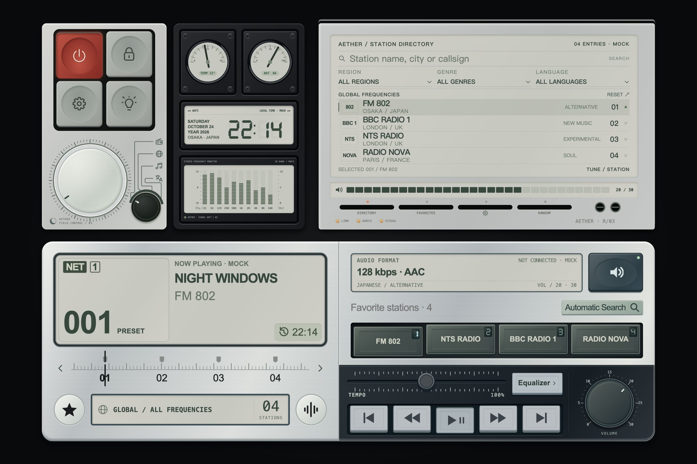
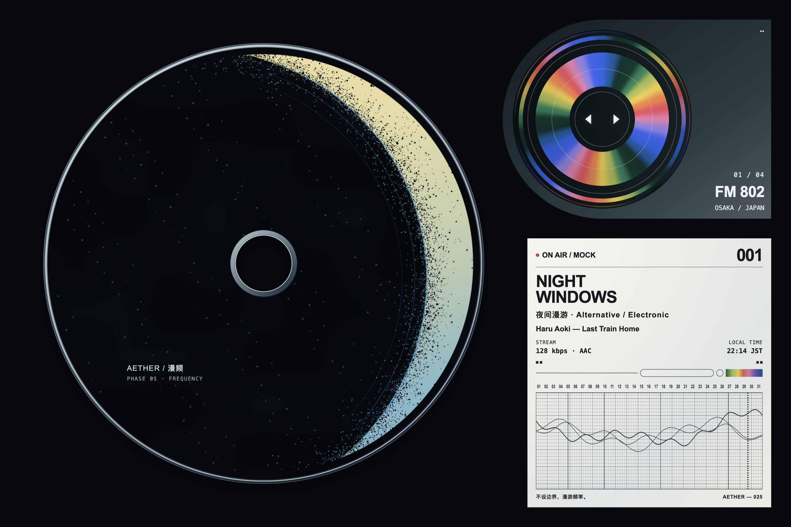

AETHER / IDENTITY FROM THE INTERFACE / 03
同一个漫频。
月相 · 盘芯 · 回声 · 校准以现有两页为起点，让图标继承页面中已经成立的几何、色彩与印刷细节。


提取的视觉语言
黑色底域 / 灰白与淡金 / 冰蓝边界 / 偏心圆与细线
正在生成导出文件…
AETHER / IDENTITY FROM THE INTERFACE / 03
以现有两页为起点，让图标继承页面中已经成立的几何、色彩与印刷细节。


黑色底域 / 灰白与淡金 / 冰蓝边界 / 偏心圆与细线
正在生成导出文件…